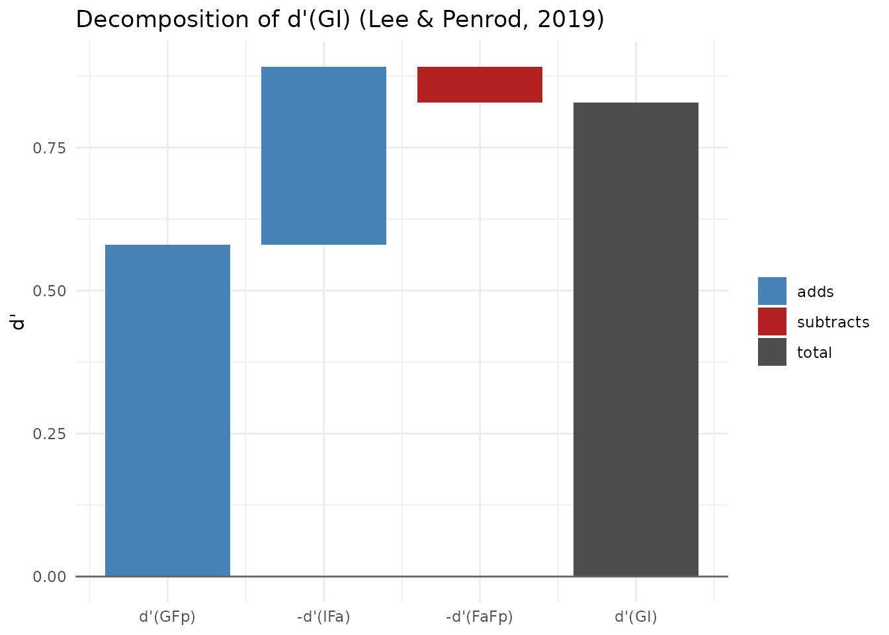
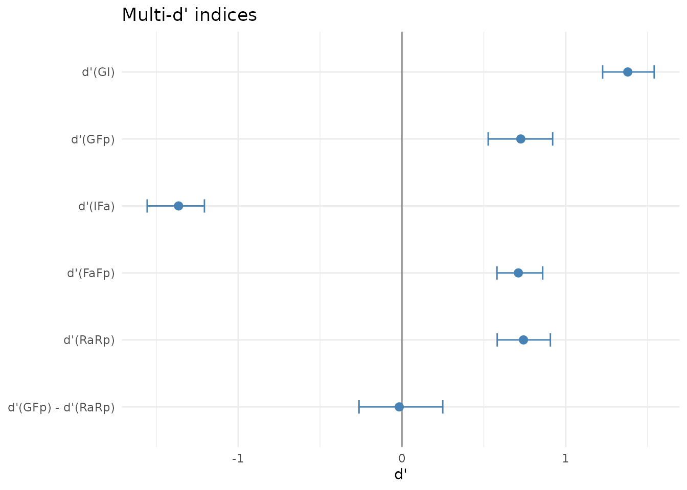
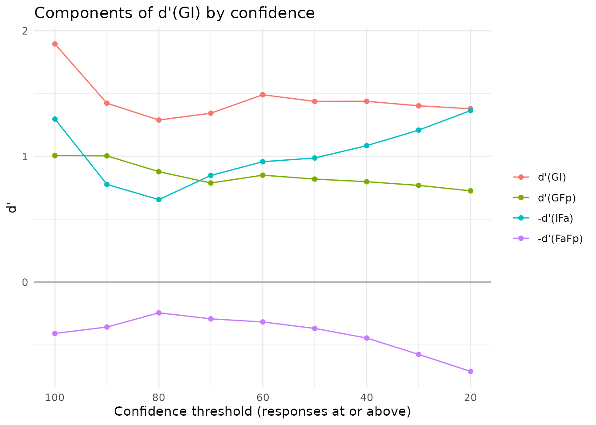

Multi-d': Lee and Penrod's Signal Detection Framework for Lineups
Colin G. Tredoux
Tamsyn M. Naylor
2026-10-29
Source:vignettes/multid_model.Rmd
multid_model.RmdAcknowledgement. Large language models supplied by Anthropic and OpenAI were used in preparing this vignette, to assist with checking code, testing the veracity of the approaches described, and on occasion editing the text. Responsibility for the content rests with the authors.
Overview
Signal detection analyses of eyewitness identification usually reduce a lineup to a 2 x 2 table. Guilty-suspect identifications are hits, innocent-suspect identifications are false alarms, and filler identifications are pooled with rejections as “negative” responses. Lee and Penrod (2019) argue that this discards the information carried by filler choices. Their Multi-d’ model keeps the full 2 x 3 table (suspect ID, filler ID, rejection) for target-present (TP) and target-absent (TA) lineups, and computes several empirical d’ values from it.
The indices
Write G, Fp and Rp for the guilty-suspect, filler and rejection rates in TP lineups, and I, Fa and Ra for the innocent-suspect, filler and rejection rates in TA lineups. Each index is a difference between two z-transformed rates.
| Index | Formula | Interpretation |
|---|---|---|
| d’(GI) | z(G) − z(I) | Guilty versus innocent suspect (the usual empirical d’) |
| d’(GFp) | z(G) − z(Fp) | Guilty suspect versus TP fillers |
| d’(IFa) | z(I) − z(Fa) | Innocent suspect versus TA fillers: TA lineup bias |
| d’(FaFp) | z(Fa) − z(Fp) | Greater appeal of TA than TP fillers |
| d’(RaRp) | z(Ra) − z(Rp) | Detection of culprit presence versus absence |
| d’(GFp) − d’(RaRp) | TP lineup bias, net of memory strength |
The three filler indices combine to give d’(GI):
The filler terms cancel, so this holds for any data set. It is an accounting identity, not an empirical finding, and its value lies in showing where a given d’(GI) comes from. A lineup procedure can reach the same d’(GI) because witnesses separate the culprit well from the fillers, or because they rarely single out an innocent suspect.
A published example
Lee and Penrod’s Table 4 applies the model to the lineup data in
Steblay et al.’s (2003) meta-analysis. The rates can be entered as
counts per 100 lineups, and correction = "none" reproduces
the published values.
md <- make_multid(counts = c(G = 45, Fp = 24, Rp = 31, I = 17, Fa = 26, Ra = 57),
correction = "none")
md
#> Multi-d' model (Lee & Penrod, 2019)
#> TP lineups: 100 TA lineups: 100 Lineup size: 6
#> Innocent suspect: designated Filler rate: total Correction: none
#>
#> Response rates:
#> G Fp Rp I Fa Ra
#> 0.45 0.24 0.31 0.17 0.26 0.57
#>
#> description estimate
#> d'(GI): guilty vs innocent suspect 0.83
#> d'(GFp): guilty suspect vs TP fillers 0.58
#> d'(IFa): innocent suspect vs TA fillers (TA bias) -0.31
#> d'(FaFp): TA vs TP filler appeal 0.06
#> d'(RaRp): culprit presence vs absence 0.67
#> d'(GFp) - d'(RaRp): TP lineup bias -0.09
#>
#> Decomposition: d'(GI) = d'(GFp) - d'(IFa) - d'(FaFp): 0.83 = 0.58 - (-0.31) - (0.06)
#> Fair-lineup reference for d'(IFa): -1.10 (observed minus reference: 0.79)The published values are d’(GI) = 0.83, d’(GFp) = 0.58, d’(IFa) = −0.31, d’(FaFp) = 0.06 and d’(RaRp) = 0.67. The decomposition plot shows how the components add up to d’(GI).
plot(md)
Interpreting d’(IFa) as lineup bias
Lee and Penrod use the total filler identification
rate, so d’(IFa) compares the innocent suspect with all the fillers
taken together. Consequently, a perfectly fair lineup does not give
d’(IFa) = 0. If witnesses who choose spread their choices evenly over
six members, the innocent suspect receives one sixth of the choices and
the fillers five sixths, and d’(IFa) is z(1/6) − z(5/6) ≈ −1.93 when
nobody rejects. The value also changes with the rejection rate.
make_multid() therefore reports
fair_reference, the d’(IFa) a perfectly fair lineup would
give at the observed TA rejection rate, together with
ifa_vs_fair, the observed d’(IFa) minus that reference.
Positive values of ifa_vs_fair mean that the innocent
suspect draws more than a fair share of choices. These two quantities
are not part of Lee and Penrod’s model; we provide them as an aid to
interpretation.
The alternative, filler_rate = "per_filler", divides
each filler rate by the number of fillers, so that the filler indices
refer to an average single filler and a fair lineup gives d’(IFa) close
to 0.
md$indices[md$indices$index %in% c("IFa", "fair_reference", "ifa_vs_fair"),
c("index", "estimate")]
#> index estimate
#> 3 IFa -0.3108198
#> 8 fair_reference -1.1005728
#> 9 ifa_vs_fair 0.7897529
make_multid(counts = c(G = 45, Fp = 24, Rp = 31, I = 17, Fa = 26, Ra = 57),
filler_rate = "per_filler", correction = "none")$indices[3, ]
#> index description estimate
#> 3 IFa d'(IFa): innocent suspect vs TA fillers (TA bias) 0.6715981When the TA lineups have no designated innocent suspect, the
innocent-suspect rate is estimated as the TA filler rate divided by the
nominal lineup size, as in make_fullroc(). Lee and Penrod
call this the “average-filler” practice. It assumes the TA lineup to be
fair, so in that case d’(IFa) carries no information about bias and
moves only with the rejection rate.
Trial-level data, bootstrap intervals and confidence
With trial-level data, make_multid() takes the same
target_present and identification columns as
the other confidence-based functions in the package. Bootstrap
percentile intervals are obtained by resampling within the TP and TA
arms. With by_confidence = TRUE, the indices are also
computed cumulatively: at each threshold, only responses made with at
least that confidence are counted, over the full number of lineups in
each arm, as in Lee and Penrod’s Table 9.
data(lineup_example)
md2 <- make_multid(lineup_example, by_confidence = TRUE,
n_bootstrap = 500, seed = 2026)
summary(md2)
#> Multi-d' model (Lee & Penrod, 2019)
#> TP lineups: 700 TA lineups: 700 Lineup size: 6
#> Innocent suspect: designated Filler rate: total Correction: loglinear
#>
#> Response rates:
#> G Fp Rp I Fa Ra
#> 0.593 0.312 0.096 0.126 0.587 0.287
#>
#> description estimate se ci_lower
#> d'(GI): guilty vs innocent suspect 1.379 0.079 1.226
#> d'(GFp): guilty suspect vs TP fillers 0.726 0.096 0.526
#> d'(IFa): innocent suspect vs TA fillers (TA bias) -1.364 0.092 -1.556
#> d'(FaFp): TA vs TP filler appeal 0.711 0.072 0.580
#> d'(RaRp): culprit presence vs absence 0.742 0.085 0.582
#> d'(GFp) - d'(RaRp): TP lineup bias -0.017 0.128 -0.262
#> ci_upper
#> 1.540
#> 0.920
#> -1.206
#> 0.859
#> 0.906
#> 0.249
#>
#> Decomposition: d'(GI) = d'(GFp) - d'(IFa) - d'(FaFp): 1.379 = 0.726 - (-1.364) - (0.711)
#> Fair-lineup reference for d'(IFa): -1.419 (observed minus reference: 0.054)
#>
#> All indices:
#> index estimate se ci_lower ci_upper
#> GI 1.379 0.079 1.226 1.540
#> GFp 0.726 0.096 0.526 0.920
#> IFa -1.364 0.092 -1.556 -1.206
#> FaFp 0.711 0.072 0.580 0.859
#> RaRp 0.742 0.085 0.582 0.906
#> tp_bias -0.017 0.128 -0.262 0.249
#> siphoning 2.090 0.136 1.827 2.382
#> fair_reference -1.419 0.022 -1.467 -1.379
#> ifa_vs_fair 0.054 0.089 -0.129 0.214
#> c 0.455 0.038 0.380 0.535
#> dr 4.695 0.507 3.864 5.897
#>
#> Cumulative indices by confidence (responses at or above threshold):
#> threshold G Fp Rp I Fa Ra GI GFp IFa FaFp RaRp
#> 100 0.098 0.011 0.001 0.001 0.029 0.001 1.895 1.006 -1.297 0.409 0.000
#> 90 0.143 0.019 0.001 0.006 0.044 0.001 1.423 1.004 -0.777 0.358 0.000
#> 80 0.189 0.039 0.001 0.015 0.065 0.001 1.289 0.878 -0.656 0.245 0.000
#> 70 0.260 0.076 0.001 0.024 0.128 0.001 1.343 0.788 -0.848 0.293 0.000
#> 60 0.352 0.109 0.001 0.031 0.180 0.001 1.490 0.850 -0.957 0.318 0.000
#> 50 0.436 0.163 0.001 0.055 0.270 0.001 1.437 0.819 -0.987 0.369 0.000
#> 40 0.507 0.218 0.001 0.078 0.369 0.001 1.438 0.798 -1.085 0.445 0.000
#> 30 0.556 0.265 0.001 0.103 0.479 0.001 1.402 0.769 -1.209 0.575 0.000
#> 20 0.593 0.312 0.096 0.126 0.587 0.287 1.379 0.726 -1.364 0.711 0.742
#> c dr
#> 2.242 137.000
#> 1.777 22.333
#> 1.526 12.619
#> 1.314 11.061
#> 1.126 11.465
#> 0.880 7.935
#> 0.701 6.523
#> 0.561 5.372
#> 0.455 4.695
plot(md2, type = "indices")
Lee and Penrod report that d’(GI) is fairly stable across confidence thresholds while its components change. High-confidence witnesses earn their d’(GI) mainly by distinguishing the culprit from the fillers; low-confidence witnesses earn much of theirs because their choices spread over the fillers and so seldom land on the innocent suspect.
plot(md2, type = "confidence")
In lineup_example, rejections were recorded only at the
lowest confidence level, so d’(RaRp) is uninformative above that
threshold.
Comparing two conditions
compare_multid() gives the difference between two
conditions on each index, with bootstrap standard errors, intervals and
p-values when both analyses were bootstrapped. Lee and Penrod’s Table 3
reports simultaneous and sequential lineups from Steblay, Dysart and
Wells (2011); here the rates are entered as counts per 100 lineups.
sim <- make_multid(counts = c(G = 52, Fp = 25, Rp = 24, I = 28, Fa = 26, Ra = 46),
n_bootstrap = 500, seed = 1)
sqn <- make_multid(counts = c(G = 44, Fp = 19, Rp = 39, I = 15, Fa = 17, Ra = 68),
n_bootstrap = 500, seed = 2)
compare_multid(sim, sqn, labels = c("simultaneous", "sequential"))
#> Multi-d' comparison: simultaneous minus sequential
#>
#> index simultaneous sequential difference se ci_lower ci_upper p_value
#> GI 0.613 0.850 -0.237 0.278 -0.789 0.298 0.393
#> GFp 0.711 0.709 0.002 0.319 -0.697 0.583 0.995
#> IFa 0.060 -0.080 0.140 0.337 -0.494 0.804 0.678
#> FaFp 0.038 -0.061 0.099 0.282 -0.499 0.633 0.724
#> RaRp 0.606 0.759 -0.153 0.258 -0.652 0.369 0.553
#> tp_bias 0.105 -0.050 0.155 0.392 -0.654 0.855 0.693
#> siphoning 0.652 0.790 -0.138 0.466 -1.082 0.797 0.768
#> ifa_vs_fair 1.274 0.912 0.362 0.347 -0.296 1.048 0.296Because these are rates per 100, the intervals reflect samples of 100 lineups per arm, not the much larger samples of the meta-analysis. With real data, the counts should be the observed frequencies.
Cautions
The Multi-d’ indices are resultant measures: they require
the responses of real witnesses to TP and TA lineups. They can describe
or compare lineups after an experiment, but, unlike mock-witness
measures such as esize_T() or func_size(),
they cannot be used to vet a lineup before it is shown to a witness.
Lee, Mansour and Penrod (2024) found that only resultant measures,
including the Multi-d’ bias indices, reliably predicted eyewitness
performance across 40 lineup sets, while mock-witness measures,
perceptual ratings and face-recognition algorithms did not.
Each index is an equal-variance d’ computed from a single pair of
rates. Lee and Penrod present the model as a descriptive framework, a
“series of thought experiments”, and do not claim that the indices
estimate underlying memory parameters. Models fitted to the full
response distribution, such as fit_max_sdt() or
fit_winter_2ht(), serve that purpose. Finally, the indices
are sensitive to how extreme rates are handled. The default log-linear
correction keeps them finite when a cell is empty, but it moves them
slightly away from values computed from raw proportions.
References
Lee, J., & Penrod, S. D. (2019). New signal detection theory-based framework for eyewitness performance in lineups. Law and Human Behavior.
Lee, J., Mansour, J. K., & Penrod, S. D. (2022). Validity of mock-witness measures for assessing lineup fairness. Psychology, Crime & Law.
Lee, J., Mansour, J. K., & Penrod, S. D. (2024). How to measure lineup fairness: Concurrent and predictive validity of lineup-fairness measures. Psychology, Crime & Law.
Steblay, N., Dysart, J., Fulero, S., & Lindsay, R. C. L. (2003). Eyewitness accuracy rates in police showup and lineup presentations: A meta-analytic comparison. Law and Human Behavior, 27, 523-540.
Steblay, N. K., Dysart, J. E., & Wells, G. L. (2011). Seventy-two tests of the sequential lineup superiority effect: A meta-analysis and policy discussion. Psychology, Public Policy, and Law, 17, 99-139.
Further Reading
-
?make_multid,?compare_multid,?plot.multid -
vignette("sdt_summary_comparisons")for d’ and criterion from 2 x 2 counts -
vignette("msdt_model")andvignette("lineup_memory_models")for process models of the full response breakdown